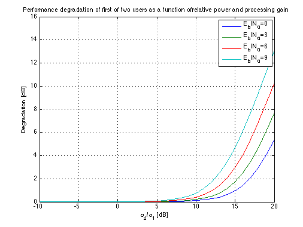

Performance degradation of first of two users
Copyright 2007 Telecommunications Lab
K=2; Q=4086; alphaK_alpha1=[-10:1:20]; alphaK_alpha1_lin=10.^(0.1*alphaK_alpha1); alpha1=ones(1,31); i=1; for (EB_N_dB=[0:3:9]), EB_N_lin=10.^(0.1*EB_N_dB); Dglin(i,:)=1+((K-1)/Q).*alpha1.^2.*EB_N_lin.*((1/(K-1))*(alphaK_alpha1_lin).^2); Dg(i,:)=10*log10(Dglin(i,:)); i=i+1; end plot(alphaK_alpha1, Dg(1,:),alphaK_alpha1, Dg(2,:),alphaK_alpha1, Dg(3,:),alphaK_alpha1, Dg(4,:),'LineWidth',1.5); legend('E_b/N_0=0','E_b/N_0=3','E_b/N_0=6','E_b/N_0=9') title('Performance degradation of first of two users as a function ofrelative power and processing gain') xlabel('\alpha_2/\alpha_1 [dB]') axis([-10 20 0 16]) ylabel('Degradation [dB]') grid on;